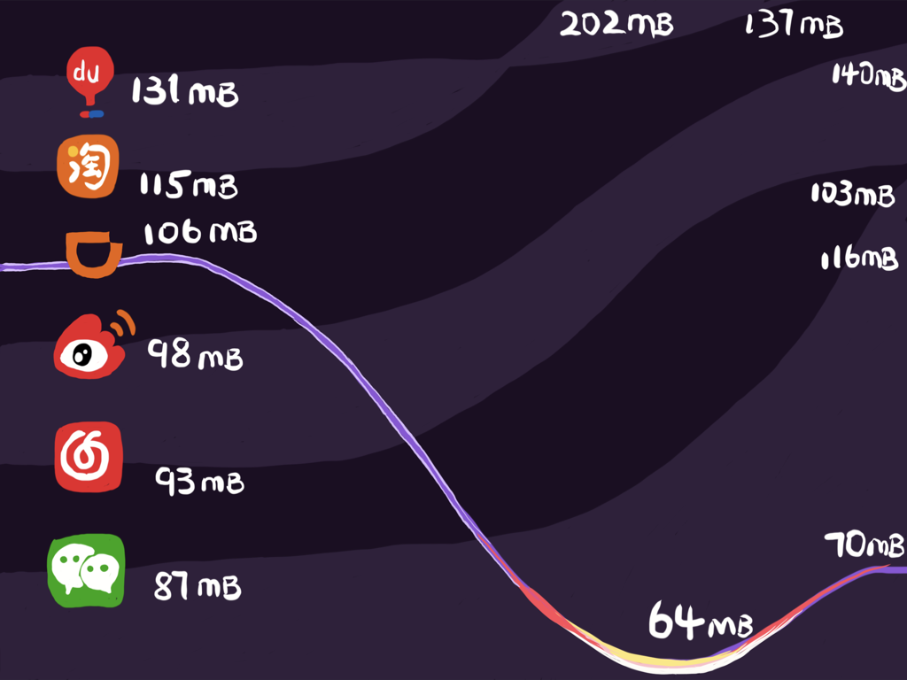
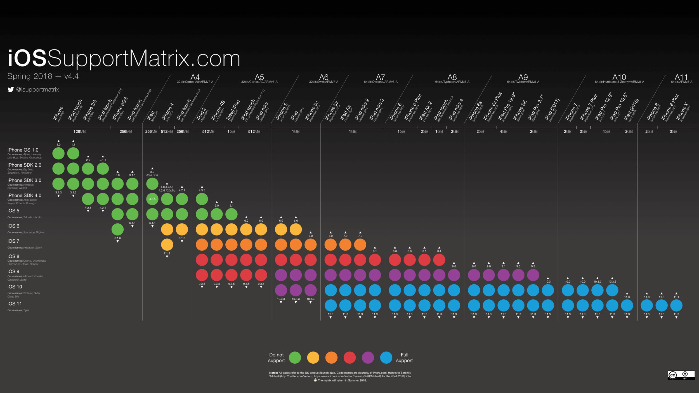
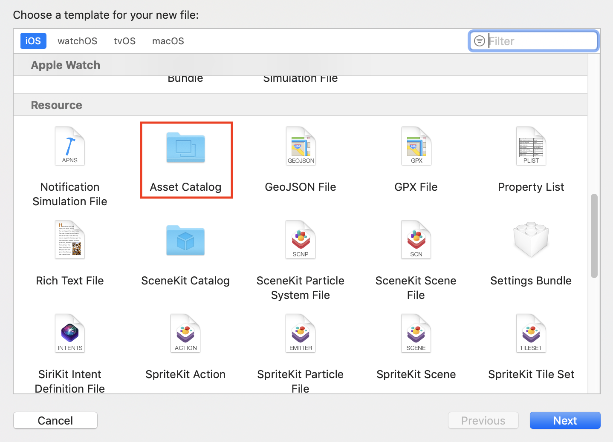
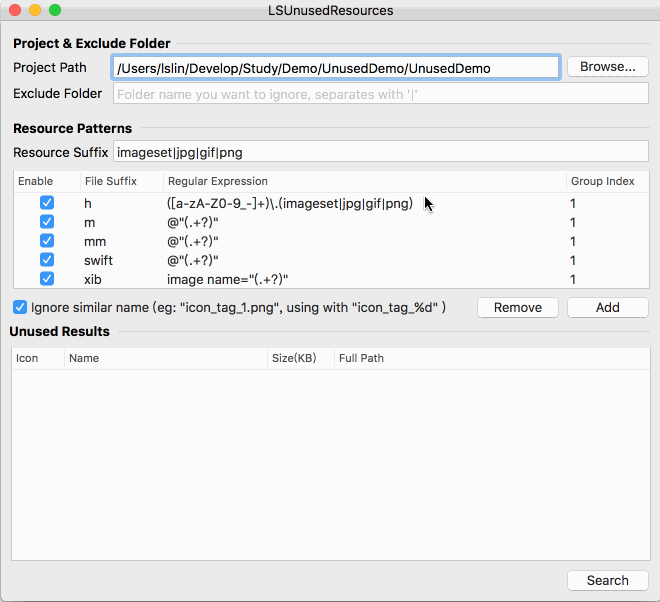
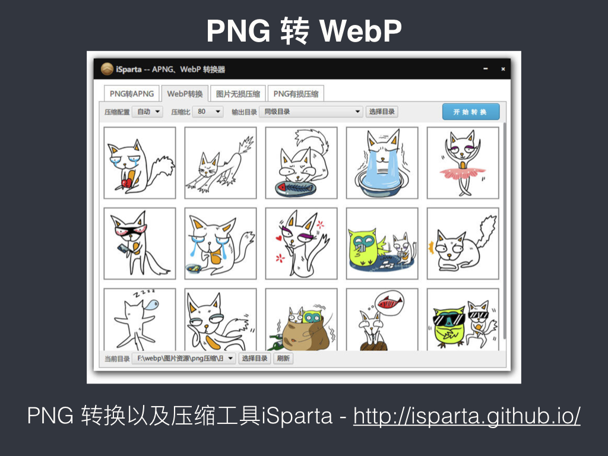
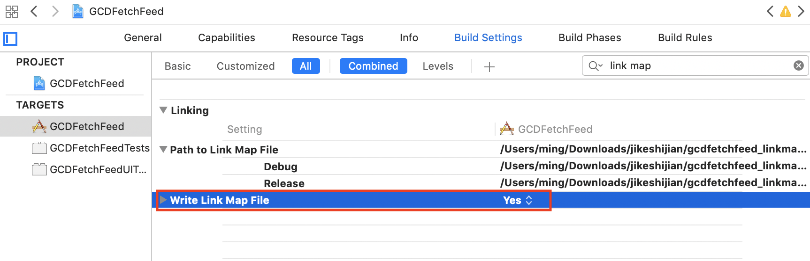
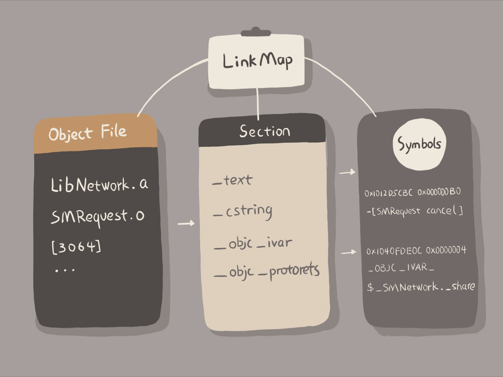
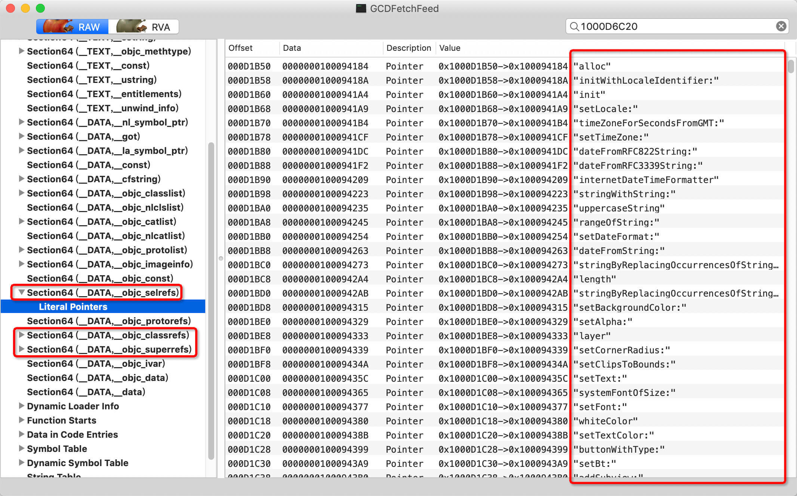
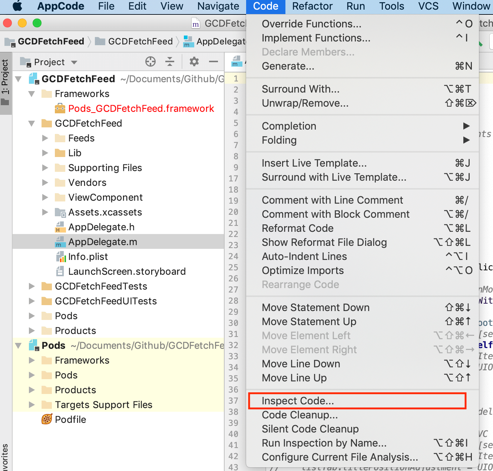
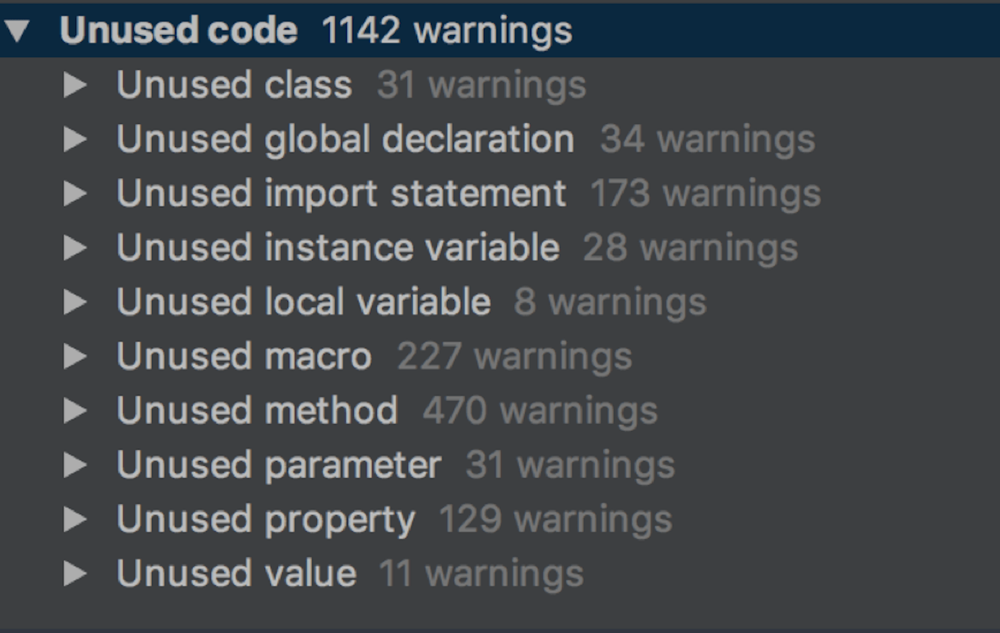

- 00 开篇词 锚定一个点，然后在这个点上深耕.md.html
- 01 建立你自己的iOS开发知识体系.md.html
- 02 App 启动速度怎么做优化与监控？.md.html
- 03 Auto Layout 是怎么进行自动布局的，性能如何？.md.html
- 04 项目大了人员多了，架构怎么设计更合理？.md.html
- 05 链接器：符号是怎么绑定到地址上的？.md.html
- 06 App 如何通过注入动态库的方式实现极速编译调试？.md.html
- 07 Clang、Infer 和 OCLint ，我们应该使用谁来做静态分析？.md.html
- 08 如何利用 Clang 为 App 提质？.md.html
- 09 无侵入的埋点方案如何实现？.md.html
- 10 包大小：如何从资源和代码层面实现全方位瘦身？.md.html
- 11 热点问题答疑（一）：基础模块问题答疑.md.html
- 12 iOS 崩溃千奇百怪，如何全面监控？.md.html
- 13 如何利用 RunLoop 原理去监控卡顿？.md.html
- 14 临近 OOM，如何获取详细内存分配信息，分析内存问题？.md.html
- 15 日志监控：怎样获取 App 中的全量日志？.md.html
- 16 性能监控：衡量 App 质量的那把尺.md.html
- 17 远超你想象的多线程的那些坑.md.html
- 18 怎么减少 App 电量消耗？.md.html
- 19 热点问题答疑（二）：基础模块问题答疑.md.html
- 20 iOS开发的最佳学习路径是什么？.md.html
- 21 除了 Cocoa，iOS还可以用哪些 GUI 框架开发？.md.html
- 22 细说 iOS 响应式框架变迁，哪些思想可以为我所用？.md.html
- 23 如何构造酷炫的物理效果和过场动画效果？.md.html
- 24 A_B 测试：验证决策效果的利器.md.html
- 25 怎样构建底层的发布和订阅事件总线？.md.html
- 26 如何提高 JSON 解析的性能？.md.html
- 27 如何用 Flexbox 思路开发？跟自动布局比，Flexbox 好在哪？.md.html
- 28 怎么应对各种富文本表现需求？.md.html
- 29 如何在 iOS 中进行面向测试驱动开发和面向行为驱动开发？.md.html
- 30 如何制定一套适合自己团队的 iOS 编码规范？.md.html
- 31 iOS 开发学习资料和书单推荐.md.html
- 32 热点问题答疑（三）.md.html
- 33 iOS 系统内核 XNU：App 如何加载？.md.html
- 34 iOS 黑魔法 Runtime Method Swizzling 背后的原理.md.html
- 35 libffi：动态调用和定义 C 函数.md.html
- 36 iOS 是怎么管理内存的？.md.html
- 37 如何编写 Clang 插件？.md.html
- 38 热点问题答疑（四）.md.html
- 39 打通前端与原生的桥梁：JavaScriptCore 能干哪些事情？.md.html
- 40 React Native、Flutter 等，这些跨端方案怎么选？.md.html
- 41 原生布局转到前端布局，开发思路有哪些转变？.md.html
- 42 iOS原生、大前端和Flutter分别是怎么渲染的？.md.html
- 43 剖析使 App 具有动态化和热更新能力的方案.md.html
- 用户故事 我是如何学习这个专栏的？.md.html
- 结束语 慢几步，深几度.md.html
- 捐赠
10 包大小：如何从资源和代码层面实现全方位瘦身？
你好，我是戴铭。今天我来跟你说下如何对 App 包大小做优化。
对App包大小做优化的目的，就是节省用户流量，提高用户下载速度。当初，我在主持滴滴客户端的瘦身时，就是奔着对包大小进行最大化优化的目标，3个月内将包大小从106MB降到了最低64MB，半年内稳定在了70MB。当时业务还没有停，从106MB降到64MB的这3个月里如履薄冰，不同团队各显神威，几乎用到了所有手段，也做了很多创新，最终达成了目标。
图1 瘦身背景
上图就是当时主流 App 的大小，可以看到最大的百度和淘宝，分别是131MB和115MB，滴滴是106MB，最小的是微信87MB。

图2 主流App安装包半年内的大小变化
可以看到，经过半年的时间，除了滴滴外每个 App的安装包都增大了不少，先前最小的微信也从87MB增加到了116MB。
相信你的团队也曾遇到过或正在经历着对包大小进行优化的任务，特别是App Store 规定了安装包大小超过150MB的 App 不能使用 OTA（over-the-air）环境下载，也就是只能在WiFi 环境下下载。所以，150MB就成了 App 的生死线，一旦超越了这条线就很有可能会失去大量用户。
如果你的App要再兼容iOS7 和 iOS8 的话，苹果官方还规定主二进制 text 段的大小不能超过60MB。如果没有达到这个标准，你甚至都没法提交 App Store。
而实际情况是，业务复杂的 App 轻轻松松就超过了60MB。虽然我们可以通过静态库转动态库的方式来快速避免这个限制，但是静态库转动态库后，动态库的大小差不多会增加一倍，这样150MB的限制就更难守住。
另外，App包体积过大，对用户更新升级率也会有很大影响。
综上所述，App 包过大既损害用户体验，影响升级率，还会导致无法提交 App Store 的情况和非WiFi环境无法下载这样可能影响到 App 生死的问题。那么，怎样对包大小进行瘦身和控制包大小的不合理增长就成了重中之重。
接下来，我就把我用过的包大小瘦身方法一个个地都说给你听。
官方 App Thinning
App Thinning 是由苹果公司推出的一项可以改善 App 下载进程的新技术，主要是为了解决用户下载 App 耗费过高流量的问题，同时还可以节省用户 iOS 设备的存储空间。
现在的 iOS 设备屏幕尺寸、分辨率越来越多样化，这样也就需要更多资源来匹配不同的尺寸和分辨率。 同时，App 也会有32位、64位不同芯片架构的优化版本。如果这些都在一个包里，那么用户下载包的大小势必就会变大。
App Thinning 会专门针对不同的设备来选择只适用于当前设备的内容以供下载。比如，iPhone 6 只会下载 2x 分辨率的图片资源，iPhone 6plus 则只会下载 3x 分辨率的图片资源。
在苹果公司使用 App Thinning 之前， 每个 App 包会包含多个芯片的指令集架构文件。以 Reveal.framework 为例，使用 du 命令查看到主文件在 Reveal.framework/Versions/A 目录下，大小有21MB。
ming$ du -h Reveal.framework/*
0B Reveal.framework/Headers
0B Reveal.framework/Reveal
16K Reveal.framework/Versions/A/Headers
21M Reveal.framework/Versions/A
21M Reveal.framework/Versions
然后，我们可以再使用 file 命令，查看 Version 目录下的Reveal 文件：
ming$ file Reveal.framework/Versions/A/Reveal
Reveal.framework/Versions/A/Reveal: Mach-O universal binary with 5 architectures: [i386:current ar archive] [arm64]
Reveal.framework/Versions/A/Reveal (for architecture i386): current ar archive
Reveal.framework/Versions/A/Reveal (for architecture armv7): current ar archive
Reveal.framework/Versions/A/Reveal (for architecture armv7s): current ar archive
Reveal.framework/Versions/A/Reveal (for architecture x86_64): current ar archive
Reveal.framework/Versions/A/Reveal (for architecture arm64): current ar archive
可以看到， Reveal 文件里还有5个文件：
- x86_64 和 i386，是用于模拟器的芯片指令集架构文件；
- arm64、armv7、armv7s ，是真机的芯片指令集架构文件。
下图来自iOS Support Matrix，列出来的是历来各个 iOS 设备的指令集详细矩阵分布。从中，我们可以一窥所有设备的芯片指令集以及支持的最高和最低 iOS 版本。

图3 各个 iOS 设备的指令集详细矩阵分布
使用 App Thinning 后，用户下载时就只会下载一个适合自己设备的芯片指令集架构文件。
App Thinning 有三种方式，包括：App Slicing、Bitcode、On-Demand Resources。
- App Slicing，会在你向 iTunes Connect 上传App后，对 App 做切割，创建不同的变体，这样就可以适用到不同的设备。
- On-Demand Resources，主要是为游戏多关卡场景服务的。它会根据用户的关卡进度下载随后几个关卡的资源，并且已经过关的资源也会被删掉，这样就可以减少初装 App 的包大小。
- Bitcode ，是针对特定设备进行包大小优化，优化不明显。
那么，如何在你项目里使用 App Thinning 呢？
其实，这里的大部分工作都是由 Xcode 和 App Store 来帮你完成的，你只需要通过 Xcode 添加 xcassets 目录，然后将图片添加进来即可。
首先，新建一个文件选择 Asset Catalog 模板，如下图所示：

图4 选择使用Asset Catalog 模板
然后，按照 Asset Catalog 的模板添加图片资源即可，添加的 2x 分辨率的图片和 3x分辨率的图片，会在上传到 App Store 后被创建成不同的变体以减小App安装包的大小。而芯片指令集架构文件只需要按照默认的设置， App Store 就会根据设备创建不同的变体，每个变体里只有当前设备需要的那个芯片指令集架构文件。
使用 App Thining 后，你可以将 2x 图和 3x 图区分开，从而达到减小App 安装包体积的目的。如果我们要进一步减小 App 包体积的话，还需要在图片和代码上继续做优化。接下来，我就跟你说说，为了减小 App 安装包的体积，我们还能在图片上做些什么？
无用图片资源
图片资源的优化空间，主要体现在删除无用图片和图片资源压缩这两方面。而删除无用图片，又是其中最容易、最应该先做的。像代码瘦身这样难啃的骨头，我们就留在后面吧。那么，我们是如何找到并删除这些无用图片资源的呢？
删除无用图片的过程，可以概括为下面这6大步。
通过 find 命令获取App安装包中的所有资源文件，比如 find /Users/daiming/Project/ -name。
设置用到的资源的类型，比如 jpg、gif、png、webp。
使用正则匹配在源码中找出使用到的资源名，比如 pattern = @“@”(.+?)““。
使用find 命令找到的所有资源文件，再去掉代码中使用到的资源文件，剩下的就是无用资源了。
对于按照规则设置的资源名，我们需要在匹配使用资源的正则表达式里添加相应的规则，比如 @“image_%d”。
确认无用资源后，就可以对这些无用资源执行删除操作了。这个删除操作，你可以使用 NSFileManger 系统类提供的功能来完成。
整个过程如下图：
图5 删除无用图片资源的过程
如果你不想自己重新写一个工具的话，可以选择开源的工具直接使用。我觉得目前最好用的是 LSUnusedResources，特别是对于使用编号规则的图片来说，可以通过直接添加规则来处理。使用方式也很简单，你可以参看下面的动画演示：

图6 LSUnusedResources使用示例
图片资源压缩
无用图片资源处理完了，那么有用的图片还有瘦身的空间吗？
答案是有的。
对于 App 来说，图片资源总会在安装包里占个大头儿。对它们最好的处理，就是在不损失图片质量的前提下尽可能地作压缩。目前比较好的压缩方案是，将图片转成 WebP。WebP 是 Google公司的一个开源项目。
首先，我们一起看看选择 WebP 的理由：
- WebP压缩率高，而且肉眼看不出差异，同时支持有损和无损两种压缩模式。比如，将Gif 图转为Animated WebP ，有损压缩模式下可减少 64%大小，无损压缩模式下可减少 19%大小。
- WebP 支持 Alpha 透明和 24-bit 颜色数，不会像 PNG8 那样因为色彩不够而出现毛边。
接下来，我们再看看怎么把图片转成WebP？
Google公司在开源WebP的同时，还提供了一个图片压缩工具 cwebp来将其他图片转成 WebP。cwebp 使用起来也很简单，只要根据图片情况设置好参数就行。
cwebp 语法如下：
cwebp [options] input_file -o output_file.webp
比如，你要选择无损压缩模式的话，可以使用如下所示的命令：
cwebp -lossless original.png -o new.webp
其中，-lossless表示的是，要对输入的png图像进行无损编码，转成WebP图片。不使用 -lossless ，则表示有损压缩。
在cwebp语法中，还有一个比较关键的参数-q float。
图片色值在不同情况下，可以选择用 -q 参数来进行设置，在不损失图片质量情况下进行最大化压缩：
- 小于256色适合无损压缩，压缩率高，参数使用 -lossless -q 100；
- 大于256色使用75%有损压缩，参数使用 -q 75；
- 远大于256色使用75%以下压缩率，参数 -q 50 -m 6。
除了cwebp工具外，你还可以选择由腾讯公司开发的iSparta。iSpart 是一个 GUI 工具，操作方便快捷，可以实现PNG格式转WebP，同时提供批量处理和记录操作配置的功能。如果是其他格式的图片要转成WebP格式的话，需要先将其转成 PNG格式，再转成WebP格式。它的GUI 界面如下图：

图7 iSparta将PNG转WebP使用示例
图片压缩完了并不是结束，我们还需要在显示图片时使用 libwebp 进行解析。这里有一个iOS 工程使用 libwebp 的范例，你可以点击这个链接查看。
不过，WebP 在 CPU 消耗和解码时间上会比 PNG 高两倍。所以，我们有时候还需要在性能和体积上做取舍。
我的建议是，如果图片大小超过了100KB，你可以考虑使用 WebP；而小于100KB时，你可以使用网页工具 TinyPng或者GUI工具ImageOptim进行图片压缩。这两个工具的压缩率没有 WebP 那么高，不会改变图片压缩方式，所以解析时对性能损耗也不会增加。
代码瘦身
App的安装包主要是由资源和可执行文件组成的，所以我们在掌握了对图片资源的处理方式后，需要再一起来看看对可执行文件的瘦身方法。
可执行文件就是 Mach-O 文件，其大小是由代码量决定的。通常情况下，对可执行文件进行瘦身，就是找到并删除无用代码的过程。而查找无用代码时，我们可以按照找无用图片的思路，即：
- 首先，找出方法和类的全集；
- 然后，找到使用过的方法和类；
- 接下来，取二者的差集得到无用代码；
- 最后，由人工确认无用代码可删除后，进行删除即可。
接下来，我们就看看具体的代码瘦身方法吧。
LinkMap 结合 Mach-O 找无用代码
我先和你说下怎么快速找到方法和类的全集。
我们可以通过分析 LinkMap 来获得所有的代码类和方法的信息。获取 LinkMap 可以通过将 Build Setting 里的 Write Link Map File 设置为 Yes，然后指定 Path to Link Map File 的路径就可以得到每次编译后的 LinkMap 文件了。设置选项如下图所示：

图8 LinkMap文件获取方法
LinkMap文件分为三部分：Object File、Section 和 Symbols。如下图所示：

图9 LinkMap文件主要组成
其中：
- Object File 包含了代码工程的所有文件；
- Section 描述了代码段在生成的 Mach-O 里的偏移位置和大小；
- Symbols 会列出每个方法、类、block，以及它们的大小。
通过 LinkMap ，你不光可以统计出所有的方法和类，还能够清晰地看到代码所占包大小的具体分布，进而有针对性地进行代码优化。
得到了代码的全集信息以后，我们还需要找到已使用的方法和类，这样才能获取到差集，找出无用代码。所以接下来，我就先和你说说怎么通过 Mach-O 取到使用过的方法和类。
我在第2篇文章“APP 启动速度怎么做优化与监控？”中，和你提到过iOS 的方法都会通过 objc_msgSend 来调用。而，objc_msgSend 在 Mach-O文件里是通过 __objc_selrefs 这个 section 来获取 selector 这个参数的。
所以，__objc_selrefs 里的方法一定是被调用了的。__objc_classrefs 里是被调用过的类，__objc_superrefs 是调用过 super 的类。通过 __objc_classrefs 和 __objc_superrefs，我们就可以找出使用过的类和子类。
那么，Mach-O文件的 __objc_selrefs、__objc_classrefs和__objc_superrefs 怎么查看呢？
我们可以使用 MachOView 这个软件来查看Mach-O 文件里的信息。MachOView 同时也是一款开源软件，如果你对源码感兴趣的话，可以点击这个地址查看。
具体的查看方法，我将通过一个案例和你展开。
- 首先，我们需要编译一个 App。在这里，我clone了一个GitHub上的示例 下来编译。
- 然后，将生成的 GCDFetchFeed.app 包解开，取出 GCDFetchFeed。
- 最后，我们就可以使用 MachOView 来查看Mach-O 里的信息了。

图10 使用 MachOView 查看GCDFetchFeed
如图上所示，我们可以看到 __objc_selrefs、__objc_classrefs和、__objc_superrefs 这三个 section。
但是，这种查看方法并不是完美的，还会有些问题。原因在于， Objective-C 是门动态语言，方法调用可以写成在运行时动态调用，这样就无法收集全所有调用的方法和类。所以，我们通过这种方法找出的无用方法和类就只能作为参考，还需要二次确认。
通过 AppCode 找出无用代码
那么，有什么好的工具能够找出无用的代码吗？
我用过不少工具，但效果其实都不是很好，都卡在了各种运用运行时调用方法的写法上。即使是大名鼎鼎的 AppCode 在这方面也做得不是很好，当代码量过百万行时 AppCode 的静态分析会“歇菜”。
但是，如果工程量不是很大的话，我还是建议你直接使用 AppCode 来做分析。毕竟代码量达到百万行的工程并不多。而，那些代码量达到百万行的团队，则会自己通过 Clang 静态分析来开发工具，去检查无用的方法和类。
用 AppCode 做分析的方法很简单，直接在 AppCode 里选择 Code->Inspect Code 就可以进行静态分析。

图11 使用 AppCode 来做静态分析
静态分析完以后，我们可以在 Unused code 里看到所有的无用代码，如下图所示：

图12 Unused code 里看到所有无用代码
接下来，我和你说一下这些无用代码的主要类型。
- 无用类：Unused class 是无用类，Unused import statement 是无用类引入声明，Unused property 是无用的属性；
- 无用方法：Unused method 是无用的方法，Unused parameter 是无用参数，Unused instance variable 是无用的实例变量，Unused local variable 是无用的局部变量，Unused value 是无用的值；
- 无用宏：Unused macro 是无用的宏。
- 无用全局：Unused global declaration 是无用全局声明。
看似AppCode 已经把所有工作都完成了，其实不然。下面，我再和你列举下 AppCode 静态检查的问题：
- JSONModel 里定义了未使用的协议会被判定为无用协议；
- 如果子类使用了父类的方法，父类的这个方法不会被认为使用了；
- 通过点的方式使用属性，该属性会被认为没有使用；
- 使用 performSelector 方式调用的方法也检查不出来，比如 self performSelector:@selector(arrivalRefreshTime)；
- 运行时声明类的情况检查不出来。比如通过 NSClassFromString 方式调用的类会被查出为没有使用的类，比如 layerClass = NSClassFromString(@“SMFloatLayer”)。还有以[[self class] accessToken] 这样不指定类名的方式使用的类，会被认为该类没有被使用。像 UITableView 的自定义的 Cell 使用 registerClass，这样的情况也会认为这个 Cell 没有被使用。
基于以上种种原因，使用AppCode检查出来的无用代码，还需要人工二次确认才能够安全删除掉。
运行时检查类是否真正被使用过
即使你使用LinkMap 结合 Mach-O 或者 AppCode 的方式，通过静态检查已经找到并删除了无用的代码，那么就能说包里完全没有无用的代码了吗？
实际上，在 App 的不断迭代过程中，新人不断接手、业务功能需求不断替换，会留下很多无用代码。这些代码在执行静态检查时会被用到，但是线上可能连这些老功能的入口都没有了，更是没有机会被用户用到。也就是说，这些无用功能相关的代码也是可以删除的。
那么，我们要怎么检查出这些无用代码呢？
通过 ObjC 的 runtime 源码，我们可以找到怎么判断一个类是否初始化过的函数，如下：
#define RW_INITIALIZED (1<<29)
bool isInitialized() {
return getMeta()->data()->flags & RW_INITIALIZED;
}
isInitialized 的结果会保存到元类的 class_rw_t 结构体的 flags 信息里，flags 的1<<29 位记录的就是这个类是否初始化了的信息。而flags的其他位记录的信息，你可以参看 objc runtime 的源码，如下：
// 类的方法列表已修复
#define RW_METHODIZED (1<<30)
// 类已经初始化了
#define RW_INITIALIZED (1<<29)
// 类在初始化过程中
#define RW_INITIALIZING (1<<28)
// class_rw_t->ro 是 class_ro_t 的堆副本
#define RW_COPIED_RO (1<<27)
// 类分配了内存，但没有注册
#define RW_CONSTRUCTING (1<<26)
// 类分配了内存也注册了
#define RW_CONSTRUCTED (1<<25)
// GC：class有不安全的finalize方法
#define RW_FINALIZE_ON_MAIN_THREAD (1<<24)
// 类的 +load 被调用了
#define RW_LOADED (1<<23)
flags 采用位方式记录布尔值的方式，易于扩展、所用存储空间小、检索性能也好。所以，经常阅读优秀代码，特别有助于提高我们自己的代码质量。
这里，我插一句题外话。我面试应聘者的时候，常常会问他们“苹果公司为什么要设计元类”这样的开放问题。结果呢，就是我所见的大部分应聘者，都只能说出元类是什么。
因为很多人都只是奔着学习 runtime 这个知识点而学习，并没有在学习过程中多想想为什么。比如，为什么类结构要这么设计，为什么一个类要设计两个结构体等等类似的问题。在我看来，没有经过深入思考的学习是不够的，是学不到精髓的，很多优秀的代码可能就会被错过。
好了，现在继续回到我们的正文内容中。既然能够在运行中看到类是否初始化了，那么我们就能够找出有哪些类是没有初始化的，即找到在真实环境中没有用到的类并清理掉。
具体编写运行时无用类检查工具时，我们可以在线下测试环节去检查所有类，先查出哪些类没有初始化，然后上线后针对那些没有初始化的类进行多版本监测观察，看看哪些是在主流程外个别情况下会用到的，判断合理性后进行二次确认，最终得到真正没有用到的类并删掉。
小结
今天这篇文章，我主要和你分享的是App安装包的一些瘦身方案。
在我看来，可以把包瘦身方案根据App的代码量等因素，划分为两种。
对于上线时间不长的新 App 和那些代码量不大的 App来说，做些资源上的优化，再结合使用AppCode 就能够有很好的收益。而且把这些流程加入工作流后，日常工作量也不会太大。
但是，对于代码量大，而且业务需求迭代时间很长的 App来说，包大小的瘦身之路依然任道重远，这个领域的研究还有待继续完善。LinkMap 加 Mach-O 取差集的结果也只能作为参考，每次人工确认的成本是非常大的，只适合突击和应急清理时使用。最后日常采用的方案，可能还是用运行时检查类的方式，这种大粒度检查的方式精度虽然不高，但是人工工作量会小很多。
课后小作业
今天我提到了运行时检查类是否被使用的方案，那么你来写个使用这种方案的小工具来检查下你的 App 里有哪些类实际上是没有被初始化用到的吧。
感谢你的收听，欢迎你在评论区给我留言分享你的观点，也欢迎把它分享给更多的朋友一起阅读。
© 2019 - 2023 Liangliang Lee. Powered by gin and hexo-theme-book.